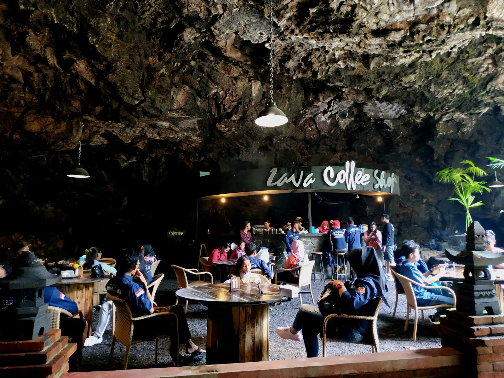

Fasilitas Golaga
GOA LAWA PURBALINGGA merupakan tujuan wisata yang tepat bagi Anda untuk menyatu dengan alam, sejenak meninggalkan rutinitas dan menghapus kejenuhan dengan penuh kegembiraan bersama sahabat dan orang-orang tercinta. Selain menyusuri keindahan lorong goa dengan hiasan lampu warna warni, beberapa fasilitas dan wahana bisa anda nikmati disini, di antaranya :
1. Zona Adventure
Wahana Pine Slide Coaster cocok untuk berbagai kalangan usia. Bagi anak-anak,
wahana ini bisa membantu melatih rasa percaya diri dan mengasah keberanian mereka.
Sementara itu, untuk remaja dan dewasa, wahana ini menjadi pilihan seru untuk berekspresi,
melepas penat, dan menikmati pengalaman yang menyenangkan.
2. Lava Coffee Shop

Menikmati secangkir kopi di dalam goa hanya bisa dinikmati di goalawa purbalingga.
Suara tetesan air dari dinding goa dan alunan musik syahdu akan menemani anda di tempat ini.
Lava coffeshop menyediakan kopi lokal purbalingga. Nanas bakar juga menjadi menu favorit yang tidak
akan anda temukan ditempat lain.
3. Golaga Skyline
Liburan ke Golaga belum lengkap rasanya kalau anda belum mencoba keseruan Golaga SkyLine. Wahana baru ini
menawarkan sensasi seluncuran gravitasi dengan panjang trek hingga 230 meter. Seluncuran di jalan menurun
tanpa mesin penggerak akan lebih seru kalau anda lakukan bersama sahabat ataupun keluarga tercinta
4. Meeting Room dalam goa
Balai pertemuan Agung merupakan Satu-satunya tempat meeting di dalam goa yang tidak akan dapat anda rasakan di tempat lain.
Area ini mampu menampung sekitar 300 orang. Selain digunakan untuk meeting, balai pertemuan agung juga sering digunakan untuk
preweeding, untuk camping, bahkan pernah digunakan untuk menggelar acara fashion show dan upacara 17 agustusan di dalam goa.
4. Glamping Area

Penasaran gimana sensasinya tidur diatas pohon ? Anda bisa langsung datang dan menikmatinya disini. Bagi yang takut ketinggian tidak usah khawatir,
karena di area glamping juga di sediakan tenda yang bisa setiap saat anda gunakan untuk menginap. Tempat ini juga dilengkapi jembatan di atas pohon
yang bisa digunakan untuk uji adrenaline putra putri anda.